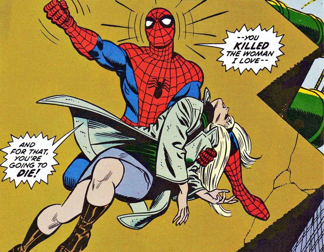

3
A noite em que Gwen Stacy morreu
Um dos contos mais dolorosos da trajetória do Homem-Aranha, publicado em Amazing Spider-Man #121-122 (1973). A morte de Gwen Stacy levou Peter ao limite e mostrou sua bússola moral incorruptível diante da tragédia.